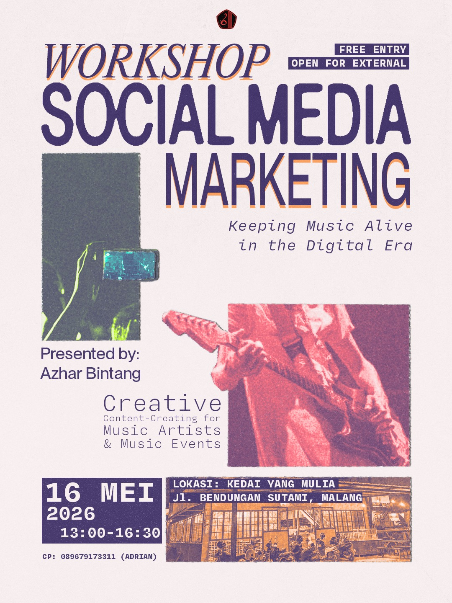

Informasi Homeband
Media Partner - Sun Up

☀️🎸 SUN UP STAGE : GIGS OPUS 2026 🎸☀️
Akhirnya lineup yang kalian tunggu-tunggu resmi hadirrr 😵💫🔥
SUN UP STAGE siap nemenin malam kalian dengan energi penuh, crowd pecah, dan penampilan seru dari Talent dan Guest Star kece yang bakal bikin suasana makin hidup ⚡
🔥 LINE UP:
INDI • SANTACRIZZ • NEWYT• MINUS TWO • RUANG TENGAH • REDHERR • MOTHERPUNCH • OPUS DANCE CREW • CANTINA • HALEDEY
Siap buat sing along, hype bareng, dan bikin malem minggu kalian pecah? 🤘🎶
📅 16 Mei 2026
📍 Parkiran GKB A20
🕓 Open Gate 14.00 - 15.00 WIB
Save the date kalian sekarang juga dan siapin energi terbaik buat seru-seruan bareng di SUN UP STAGE ☀️🔥
Workshop - Social Media Marketing

[WORKSHOP SOCIAL MEDIA MARKETING]
Jangan sampe band atau acaramu tenggelam algoritma! Yuk, kumpul bareng di workshop Social Media Marketing: "Keeping Music Alive in the Digital Era" Kita bakal ngobrolin gimana caranya bikin konten kreatif buat musisi dan acara musik.
Gak cuma teori, kita bakal ada sesi interaktif yang bikin workshop ini relevan banget di jaman sekarang dan bisa diterapkan di berbagai bidang:
🎤 Sebagai Manajer Talent: bikin paham cara mempromosikan bandmu!
📱 Sebagai Humas/Publikasi Event: bikin paham cara membuat konten untuk ngeramein acaramu!
📸 Sebagai Staff PDD: memahami editing bukan hanya tentang visual bagus, tapi juga harus sesuai dengan strategi/tujuan publikasi!
🔥 Save the time & place:
📍 Kedai Yang Mulia, Malang
🗓️ Sabtu, 16 Mei 2026
⏰ Open Gate: 13:00
💵 GRATIS (Terbuka untuk umum!)